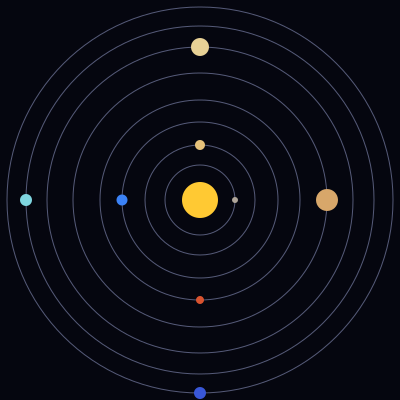

Distância entre a Terra e o Sol
A distância média é de aproximadamente 150 milhões de quilômetros, valor chamado de unidade astronômica. A luz do Sol leva cerca de oito minutos para chegar até nós.
Este site apresenta uma visão geral do Sistema Solar, formado pelo Sol e por todos os corpos que giram ao seu redor. Aqui você encontra dados sobre os planetas, dicas de observação do céu e um formulário de contato.
O Sol concentra cerca de 99,8% de toda a massa do sistema. A NASA e outras agências espaciais estudam esses astros com sondas e telescópios.

A distância média é de aproximadamente 150 milhões de quilômetros, valor chamado de unidade astronômica. A luz do Sol leva cerca de oito minutos para chegar até nós.
E pur si muove.
Em português: "E, no entanto, ela se move". A frase é atribuída a Galileu Galilei, defensor da ideia de que a Terra gira em torno do Sol.
Visite o site da NASA (abre em nova aba).
Áudio de demonstração gerado pelo grupo (um tom simples).